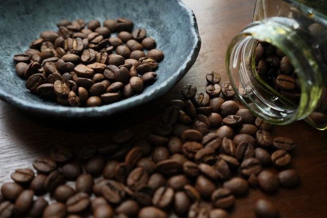

ブルーマウンテンとは？

ブルーマウンテンは、カリブ海の島国ジャマイカのブルーマウンテン山脈で栽培されるコーヒー豆です。ここで栽培されるコーヒー豆のうち、標高が800m~1200mの特定の地域で栽培され、厳密な検査を受けたものだけをブルーマウンテンと呼ぶことができ、世界でも高級な豆として知られています。また、ほかのコーヒー豆は麻袋で輸送されるのに対し、ブルーマウンテンは樽に入れて運ばれます。これによって鮮度や高い香りが保たれているというのも、ユニークな特徴の一つです。
実は特に日本で非常に人気な銘柄で、なんとジャマイカで生産されるブルーマウンテンのうち8割は日本に輸出されているそう。
実は特に日本で非常に人気な銘柄で、なんとジャマイカで生産されるブルーマウンテンのうち8割は日本に輸出されているそう。
ブルーマウンテンの産地と歴史
ブルーマウンテンの栽培されている地域は「ブルーマウンテンエリア」とも呼ばれ、昼夜の激しい寒暖差や斜面による水はけのよさ、弱酸性の土壌、さらには自然発生する霧による水分の循環がコーヒー豆の生産に非常に最適な環境となっています。恵まれた環境から生み出されるコーヒー豆は高品質で、豊かな風味を持ちます。
ジャマイカではコーヒーの生産を支援するため1948年にコーヒー産業公社(CIB)という組織が設立されており、ブルーマウンテンはこのCIBの推進によってブランド化されました。ブルーマウンテンの厳格な基準はこのCIBが規定しており、現在もその後継の組織であるJACRAが品質維持の活動を続けています。
ジャマイカではコーヒーの生産を支援するため1948年にコーヒー産業公社(CIB)という組織が設立されており、ブルーマウンテンはこのCIBの推進によってブランド化されました。ブルーマウンテンの厳格な基準はこのCIBが規定しており、現在もその後継の組織であるJACRAが品質維持の活動を続けています。
ブルーマウンテンの味わい
高級豆であるブルーマウンテンの良さは、なんといってもその味のバランス。上品な口当たりで、軽いコク、「苦味」「酸味」「甘み」のバランスが非常に優れており、繊細な味わいです。また香りも抜群で、「コーヒーの王様」という呼び名にふさわしい、コーヒーの王道的な風味を持っています。苦味が強くなく飲みやすいため、コーヒー初心者にもおすすめとされています。
飲まれ方は等級によって少し異なります。最高評価である「No.1」は、その品質を損なわないようにストレートで飲まれることが主です。他の豆を一切ブレンドせず一種の豆だけを用いるストレートは、最高級の豆を最大限楽しむためにはうってつけの飲み方です。最高評価でない等級ではブレンドの材料としてよく用いられます。その芳醇な香りを生かすため、香りの弱い品種と組み合わせることが一般的です。
飲まれ方は等級によって少し異なります。最高評価である「No.1」は、その品質を損なわないようにストレートで飲まれることが主です。他の豆を一切ブレンドせず一種の豆だけを用いるストレートは、最高級の豆を最大限楽しむためにはうってつけの飲み方です。最高評価でない等級ではブレンドの材料としてよく用いられます。その芳醇な香りを生かすため、香りの弱い品種と組み合わせることが一般的です。